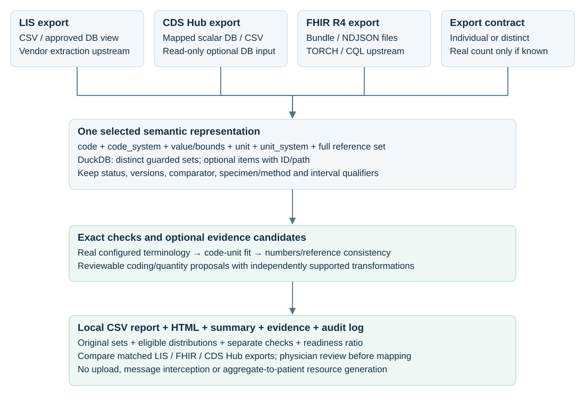

1. Run
cp -n pipeline.example.toml pipeline.toml cp -n .env.example .env mkdir -p local output export PODMAN_COMPOSE_PROVIDER=podman-compose SQC_CONFIG_FILE=pipeline.toml podman compose run --rm --build runner
Install Podman and podman-compose; start the configured machine on macOS/Windows. The runner writes reports and exits. Setup and operation.
The input CSV contains illustrative measurements. Every configured lookup contacts a real source: NLM UCUM and the public FHIR terminology test service. Actual returned editions are recorded. For studies select your own/authenticated service; missing evidence stays unverified.
2. Select input and configuration
Example: examples/laboratory.csv. Your export: local/laboratory.csv. Edit [input] and [input.columns] in the TOML; credentials and the local model URL belong in .env.
| Source | Input type | Selection |
|---|---|---|
| LIS / database CSV | csv | Path and mapped headers |
| FHIR R4 Bundle / NDJSON | fhir_file | Native Observation fields; TORCH/CQL upstream |
| PostgreSQL / SQLite | postgres / sqlite | Read-only table/view and mapped columns |
The contract is code + code_system + value/bounds + unit + unit_system + complete reference set. Preserve versions, comparator, status and specimen/method/population context. Distinct inputs use actual frequencies; individual inputs can retain IDs. Configuration · Field contract.
3. Choose terminology evidence
Choose for each lookup: A — downloaded/local files, B — an API, or both. Your laboratory input is configured separately under [input].
| Route | Setup before the batch | Configuration | During the batch |
|---|---|---|---|
| A · Local terminology | Download a pinned BfArM package with package-init, install actual FHIR JSON, or provide a real CSV/SQLite catalogue. | type="fhir_artifacts", "csv" or "sqlite"; path, systems, enabled=true. | Read the selected local files and record their hashes/editions. |
| B · Terminology API | Select an adapter/endpoint and obtain credentials if required. | type, endpoint, enabled=true; declared systems for generic sources; environment or secret-file references. | Call the explicitly enabled real service and cache its responses. |
A · Download, then reference the data
Copy terminology.example.toml to terminology.toml. Select package enabled=true, its fixed version and local path. Read the linked download conditions before setting accept_download_conditions=true. Then install:
SQC_CONFIG_FILE=terminology.toml podman compose --profile terminology run --rm --build package-init
After installation, enable the corresponding lookup and use the same path. Existing FHIR artifacts can be referenced directly:
[lookups.loinc_de] enabled = true type = "fhir_artifacts" path = "local/terminologies/loinc-de-2.82.0" systems = ["http://loinc.org"]
package-init is a separate setup step. A normal batch reads local files. Put downloaded data under ignored local/.
B · Configure API and credentials
The default NLM/public FHIR APIs require no credentials. For the official LOINC API, replace the existing lookups.loinc table:
[lookups.loinc] enabled = true type = "loinc" endpoint = "https://fhir.loinc.org" username_env = "LOINC_FHIR_USERNAME" password_env = "LOINC_FHIR_PASSWORD"
Set these two credential values in ignored .env, or use username_file/password_file pointing to local/secrets/. Generic FHIR APIs use token_env/token_file; WHO uses client ID/secret references. Keep one dedicated LOINC and one UCUM service active.
Local German labels can complement API checks. For an offline run set network.mode="offline" and reference actual captured UCUM/LOINC evidence via input.snapshot. BfArM translation supplements provide labels; they cannot alone validate every UCUM expression or establish conversion factors. Missing evidence remains unverified, with no fallback to an unconfigured API.
Full local/API setup, credential fields and offline capture.
4. What runs
- Check headers, types and source-frequency contract.
- Group complete guarded sets in DuckDB; compute eligible distributions.
- Verify units with NLM and codes/example units with the configured FHIR terminology service; optionally compare supplied names with sourced aliases.
- Check semantic fit, verified conversion factors, numeric values and supplied reference bounds.
- Optionally extract quoted candidates using a local model and real web/PubMed evidence.
- Write separate findings and proposals; source values stay unchanged.

Decision flow

Source aggregation

BfArM German labels, package setup, SemLookP and WHO ICD-11 configuration. Packages are installed explicitly; APIs remain separately selectable.
Code modules, logging and real-service tests · Placement alongside MII FHIR Validator / FDE.
5. Read the report
Open output/laboratory-review.html; the CSV contains each grouped set, separate checks, source evidence and transformation proposals. The summary contains returned terminology editions, coverage, timing and lookup failures; the audit records artifact hashes.
| Status | Meaning |
|---|---|
| passed | Assessed checks supported |
| suggestion | Documented proposal requires approval |
| unclear | Source/context/evidence unavailable or interpretation ambiguous |
| error | Deterministic inconsistency |
An out-of-reference value is descriptive, not a patient diagnosis. Readiness measures numeric/terminology completeness, not MII certification or clinical approval. Physicians review proposals in a separate CSV copy. For another run choose a new output path or explicitly set overwrite=true.
plausibility verify output/laboratory-review.audit.jsonl
6. Test again
Use your existing pipeline.toml. Inside its [output] table select a fresh report prefix, for example path="output/laboratory-review-2.csv", so earlier reports remain available. Keep the selected input and lookup route.
export PODMAN_COMPOSE_PROVIDER=podman-compose export SQC_CONFIG_FILE=pipeline.toml podman compose run --rm --build runner config-check --config /app/pipeline.toml podman compose run --rm runner podman compose run --rm runner verify /app/output/laboratory-review-2.audit.jsonl
Open output/laboratory-review-2.html and its CSV. With the unchanged example CSV, expect 8 input rows → 7 grouped review rows / 84 source occurrences. Findings depend on actual available evidence. Console output identifies input, grouping, enabled sources and model use; the audit verifies report hashes.
SQC_CONFIG_FILE selects the host TOML mounted as /app/pipeline.toml. For the optional terminology setup use terminology.toml instead; adapt the verification filename to its output. Operation and uv instructions.
7. Enable Ollama when needed
The TOML defines a small ministral-3:3b model; research starts disabled. Start Ollama, provision the model and download the actual UCUM catalogue. Then set research.enabled=true and run the review again.
podman compose --profile research up -d ollama podman compose --profile research run --rm model-init podman compose --profile research run --rm catalog-init
Allocate enough VM memory or use native Ollama on macOS. Model setup · Extraction behaviour · Real terminology endpoints and credentials.
Catalogue spelling → quoted lookup pages → optional PubMed abstracts. Model claims require supplied evidence and independently validated candidate units. No model-generated conversion factors, patient values or identifiers enter the prompts. Medication, diagnosis and broad deep-search orchestration are later work.